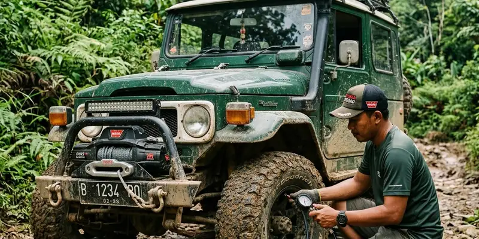

Bergabung dengan komunitas offroad Malang dapat dilakukan dengan mengikuti kegiatan terbuka komunitas, menyiapkan kendaraan sesuai standar, lalu memahami etika dasar sebelum resmi menjadi anggota.
Ringkasan Inti
- Komunitas offroad Malang umumnya terbuka bagi siapa saja yang memiliki minat dan kendaraan yang sesuai.
- Proses bergabung biasanya diawali dengan mengikuti kegiatan bersama sebagai tamu.
- Etika keselamatan dan kelestarian lingkungan menjadi bagian penting budaya komunitas.
- Beberapa komunitas memiliki kegiatan rutin seperti silaturahmi dan offroad league.
- Kesiapan kendaraan menjadi salah satu syarat utama sebelum ikut kegiatan lapangan.
Bagaimana Langkah Awal Bergabung dengan Komunitas Offroad Malang
Langkah awal bergabung dengan komunitas offroad Malang biasanya dimulai dengan mencari informasi kegiatan komunitas melalui jejaring sosial atau rekomendasi anggota yang sudah aktif.
Setelah menemukan komunitas yang sesuai, calon anggota umumnya disarankan untuk hadir sebagai tamu dalam kegiatan kumpul atau perjalanan ringan terlebih dahulu. Tahap ini membantu calon anggota mengenal budaya komunitas sebelum memutuskan bergabung secara resmi.
Beberapa komunitas offroad di Kabupaten Malang juga aktif dalam kegiatan silaturahmi lintas komunitas, seperti pertemuan yang melibatkan unsur pemerintah daerah dan dilanjutkan dengan kegiatan offroad bersama. Kehadiran dalam acara semacam ini bisa menjadi kesempatan baik untuk mengenal lebih banyak komunitas sekaligus.
Apa Saja Syarat Umum yang Biasa Diminta Komunitas
Syarat umum yang biasa diminta komunitas offroad meliputi kepemilikan kendaraan yang sesuai standar medan, kesediaan mengikuti aturan komunitas, dan komitmen terhadap keselamatan bersama.
Sebagian komunitas juga menetapkan syarat tambahan seperti iuran keanggotaan untuk mendukung kegiatan bersama, atau kewajiban mengikuti sejumlah kegiatan sebelum dianggap sebagai anggota tetap. Syarat ini dapat bervariasi tergantung kebijakan masing-masing komunitas.
Calon anggota disarankan menanyakan secara langsung mengenai syarat spesifik kepada pengurus komunitas, karena setiap komunitas memiliki kebijakan yang berbeda-beda sesuai karakteristik anggotanya.

Membaur dalam kopi darat (kopdar) dan kegiatan perkenalan merupakan pintu gerbang yang ideal bagi pemula.
Apa Etika Dasar yang Perlu Dipahami Anggota Baru
Etika dasar dalam komunitas offroad mencakup penghormatan terhadap sesama anggota, kepatuhan terhadap arahan pemandu, dan tanggung jawab menjaga lingkungan selama kegiatan berlangsung.
Anggota baru umumnya diharapkan menjunjung tinggi keselamatan dan tertib berkendara dalam setiap kegiatan yang diikuti. Nilai ini juga menjadi pesan yang kerap disampaikan kepada anggota komunitas offroad dan trail agar kegiatan tetap tertata dan minim risiko.
Selain itu, menjaga kelestarian lingkungan menjadi bagian penting dari etika berkendara offroad, mengingat jalur yang dilalui sering berada di kawasan alam seperti hutan dan pegunungan yang perlu dijaga kelestariannya untuk kegiatan jangka panjang.
Bagaimana Cara Menjaga Hubungan Baik dengan Sesama Anggota
Hubungan baik dengan sesama anggota dapat dijaga dengan aktif berkomunikasi, saling membantu saat kegiatan lapangan, dan menghargai perbedaan pengalaman antaranggota.
Komunitas offroad umumnya menjunjung nilai kebersamaan yang tinggi, termasuk saling membantu ketika ada anggota yang mengalami kendala teknis di jalur. Nilai kebersamaan ini juga tercermin dari kepedulian sosial sejumlah komunitas offroad dan trail di Kabupaten Malang yang turut membantu masyarakat saat terjadi bencana.
Sikap saling menghargai dan gotong royong ini menjadi salah satu daya tarik utama bergabung dengan komunitas offroad, selain dari sisi hobi otomotif itu sendiri.
Apa Manfaat Bergabung dengan Komunitas Offroad Resmi
Bergabung dengan komunitas offroad resmi memberikan manfaat berupa akses jejaring, berbagi pengetahuan teknis, serta kesempatan mengikuti event dan offroad league secara berkala.
Anggota komunitas juga umumnya mendapat dukungan saat menghadapi kendala di jalur, karena kegiatan offroad biasanya dilakukan secara berkelompok dengan prinsip saling membantu. Dukungan ini penting terutama saat melintasi medan yang menantang.
Selain manfaat teknis, keanggotaan komunitas juga membuka peluang keterlibatan dalam kegiatan sosial, termasuk kegiatan kemanusiaan yang melibatkan komunitas offroad dan trail di berbagai wilayah Malang Raya.
Kesimpulan
Bergabung dengan komunitas offroad Malang sebaiknya dilakukan secara bertahap, mulai dari mengenal budaya komunitas, memahami syarat keanggotaan, hingga menerapkan etika dasar berkendara. Dengan persiapan yang tepat, pengalaman offroad akan lebih aman dan bermanfaat baik secara pribadi maupun sosial.
FAQ
Sebagian komunitas menetapkan iuran untuk mendukung kegiatan bersama, namun kebijakan ini dapat bervariasi tergantung masing-masing komunitas.
Umumnya diperlukan kendaraan yang sesuai standar medan offroad, meski tingkat modifikasi dapat berbeda tergantung jenis kegiatan yang diikuti.
Prosesnya bervariasi, tergantung kebijakan komunitas, namun umumnya diawali dengan mengikuti beberapa kegiatan sebagai tamu terlebih dahulu.